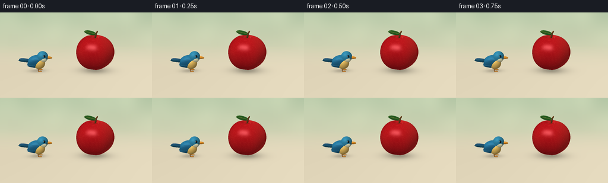
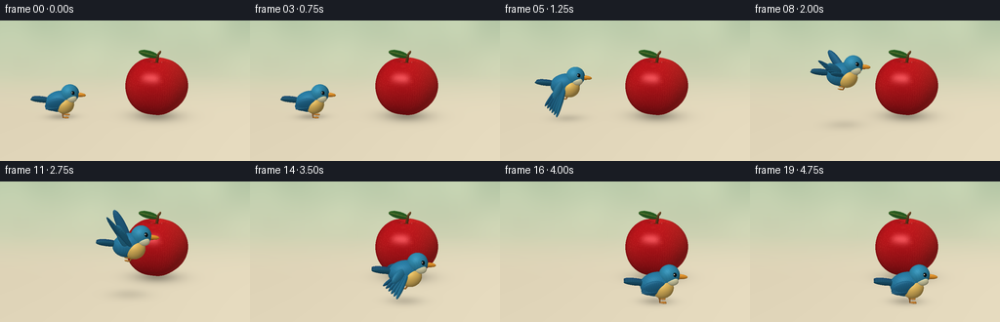

CODING AGENTS AS PIXEL WORLD MODELS
traex/GPT-6.1-Sol · dynamic_spatial_relationship_0039
点击播放 · 原生 RGB 像素
逐轮保存的候选
回放视频、检查图与代码变化。
每份候选均可单独播放。实际图片检查记录在下方工具轨迹中。
候选 01播放与检查图
点击播放 · 原生 RGB 像素


展开代码变化
--- 上一保存版本
+++ 本次保存版本
@@ -0,0 +1,217 @@
+import numpy as np
+from PIL import Image, ImageDraw, ImageFilter
+from pathlib import Path
+import math
+import artifact_io
+
+ROOT = Path(__file__).resolve().parent
+S=3; W=256*S; H=144*S
+rng=np.random.default_rng(13)
+CAM=np.array([0.,3.,7.],dtype=np.float32)
+TARGET=np.array([0.,.55,0.],dtype=np.float32)
+F=(TARGET-CAM); F/=np.linalg.norm(F)
+R=np.cross(F,np.array([0,1,0],np.float32));R/=np.linalg.norm(R)
+U=np.cross(R,F)
+yy,xx=np.mgrid[:H,:W].astype(np.float32)
+D=F[None,None,:]+((xx-W/2)/(380*S))[...,None]*R+((H/2-yy)/(380*S))[...,None]*U
+D/=np.linalg.norm(D,axis=-1)[...,None]
+LIGHT=np.array([-3.,6.,5.],np.float32); LIGHT/=np.linalg.norm(LIGHT)
+
+# Quiet, sunlit, out-of-focus orchard colors.
+bg=np.empty((H,W,3),np.float32)
+t=yy/H
+for c,(top,bot) in enumerate(zip([177,197,164],[233,221,192])):
+ bg[:,:,c]=top+(bot-top)*np.clip(t*1.3,0,1)
+bgi=Image.fromarray(np.uint8(bg));dr=ImageDraw.Draw(bgi,'RGBA')
+for i in range(32):
+ x=float(rng.uniform(-60,W+60)); y=float(rng.uniform(-90,150)); rr=float(rng.uniform(12,70))
+ dr.ellipse((x-rr,y-rr,x+rr,y+rr),fill=(239,245,210,int(rng.uniform(15,50))))
+bg=np.asarray(bgi.filter(ImageFilter.GaussianBlur(11*S))).astype(np.float32)
+# Perspective tabletop fading gently into the background.
+tground=-CAM[1]/D[:,:,1]
+Pground=CAM+D*tground[...,None]
+floor_weight=np.clip((Pground[:,:,2]+3.)/3.,0,1)
+floor=np.empty_like(bg)
+for c,v in enumerate([226,215,187]):
+ floor[:,:,c]=v+4*np.sin(Pground[:,:,0]*.5)+4*np.clip(Pground[:,:,2]/5,0,1)
+bg=bg*(1-floor_weight[...,None])+floor*floor_weight[...,None]
+
+
+def basis(direction):
+ a=np.array(direction,np.float32);a/=np.linalg.norm(a)
+ b=np.cross(a,np.array([0.,0.,1.],np.float32))
+ if np.linalg.norm(b)<.01: b=np.cross(a,np.array([0.,1.,0.],np.float32))
+ b/=np.linalg.norm(b);c=np.cross(a,b)
+ return np.stack([a,b,c],axis=1)
+
+def shade(n,p,color,rough=.4):
+ diff=np.maximum(0,n@LIGHT)
+ view=CAM-p;view/=np.linalg.norm(view,axis=-1)[:,None]
+ half=view+LIGHT;half/=np.linalg.norm(half,axis=-1)[:,None]
+ spec=np.maximum(0,np.sum(n*half,axis=-1))**(24 if rough>.3 else 65)
+ ambient=.56+.10*np.maximum(n[:,1],0)
+ out=np.asarray(color)*(ambient+.42*diff)[:,None]
+ out+=spec[:,None]*(16 if rough>.3 else 60)
+ return out
+
+class Render:
+ def __init__(self,image,depth=None):
+ self.im=image.copy();self.depth=np.full((H,W),np.inf,np.float32) if depth is None else depth.copy()
+ def ell(self,center,radii,col,orient=None,rough=.4,texture=None):
+ center=np.asarray(center,np.float32); radii=np.asarray(radii,np.float32)
+ M=np.eye(3,dtype=np.float32) if orient is None else orient
+ o=((CAM-center)@M)/radii
+ d=(D@M)/radii
+ aa=np.sum(d*d,axis=-1);bb=np.sum(o*d,axis=-1);cc=np.sum(o*o)-1
+ disc=bb*bb-aa*cc
+ dist=(-bb-np.sqrt(np.maximum(disc,0)))/aa
+ mask=(disc>=0)&(dist>0)&(dist<self.depth)
+ if not mask.any():return
+ p=CAM+D[mask]*dist[mask,None]
+ local=(p-center)@M
+ n=(local/(radii*radii))@M.T;n/=np.linalg.norm(n,axis=-1)[:,None]
+ color=np.tile(np.asarray(col,dtype=np.float32),(len(p),1))
+ if texture=='feather':
+ noise=np.sin(local[:,0]*170+local[:,1]*25)*np.sin(local[:,2]*160)
+ color+=noise[:,None]*3
+ self.im[mask]=shade(n,p,color,rough)
+ self.depth[mask]=dist[mask]
+ def segment(self,a,b,width,col,thickness=None,texture=None):
+ a=np.array(a);b=np.array(b)
+ self.ell((a+b)/2,[np.linalg.norm(b-a)/2+width,width,thickness or width],col,basis(b-a),texture=texture)
+
+APPLE=np.array([.61,.615,0],np.float32)
+def apple_sdf(p):
+ q=(p-APPLE)/np.array([.62,.61,.59],np.float32)
+ rad=np.linalg.norm(q,axis=-1)
+ rho=np.sqrt(q[...,0]**2+q[...,2]**2)
+ phi=np.arctan2(q[...,2],q[...,0])
+ yn=q[...,1]/np.maximum(rad,1e-5)
+ shape=1+.07*yn-.055*yn**2+.025*np.cos(5*phi)*(1-yn**2)
+ shape-=.20*np.exp(-(rho/.29)**2)*np.maximum(yn,0)**8
+ shape-=.085*np.exp(-(rho/.25)**2)*np.maximum(-yn,0)**8
+ return (rad-shape)*.59
+
+static=Render(bg)
+# Sphere tracing the hand-shaped, subtly five-lobed apple.
+o=CAM-APPLE
+b=np.sum(D*o,axis=-1);disc=b*b-(np.sum(o*o)-.82**2)
+valid=disc>0
+idx=np.where(valid)
+dirs=D[idx]
+dist=-b[idx]-np.sqrt(disc[idx]);active=np.ones(len(dist),bool);hit=np.zeros(len(dist),bool)
+for i in range(85):
+ ids=np.where(active)[0]
+ if len(ids)==0:break
+ p=CAM+dirs[ids]*dist[ids,None]
+ sdf=apple_sdf(p)
+ good=np.abs(sdf)<.00055
+ hit[ids[good]]=True;active[ids[good]]=False
+ dist[ids]+=np.maximum(sdf,.0002)*.8
+ active[ids[dist[ids]>9.5]]=False
+ids=np.where(hit)[0]
+p=CAM+dirs[ids]*dist[ids,None]
+eps=.0008
+n=np.stack([(apple_sdf(p+np.eye(3)[j]*eps)-apple_sdf(p-np.eye(3)[j]*eps))/(2*eps) for j in range(3)],axis=1)
+n/=np.linalg.norm(n,axis=-1)[:,None]
+q=p-APPLE
+blush=np.clip(.5+.5*np.sin(q[:,0]*4-q[:,2]*2),0,1)
+col=np.stack([177+29*blush,19+17*blush,25+10*blush],axis=1)
+striations=np.sin(np.arctan2(q[:,2],q[:,0])*90+q[:,1]*6)*2.6
+col+=striations[:,None]*np.array([1,.65,.35])
+fleck=np.sin(p[:,0]*937+p[:,1]*431)*np.sin(p[:,2]*687-p[:,1]*815)
+col+=(fleck>.91)[:,None]*np.array([37,29,20])
+static.im[idx[0][ids],idx[1][ids]]=shade(n,p,col,.22)
+static.depth[idx[0][ids],idx[1][ids]]=dist[ids]
+# Stem, inset crown, and a curved green leaf.
+static.ell([.61,1.118,.015],[.078,.025,.074],[91,39,13])
+static.segment([.61,1.12,.015],[.635,1.29,.012],.028,[97,59,28])
+static.segment([.635,1.29,.012],[.674,1.35,.008],.024,[113,72,34])
+leaf_axis=np.array([-.9,.28,.2]);leafM=basis(leaf_axis)
+static.ell([.45,1.31,.02],[.205,.068,.013],[50,112,41],leafM)
+static.segment([.625,1.27,.033],[.26,1.37,.065],.008,[117,149,60])
+for k in range(1,5):
+ u=k/5
+ mid=np.array([.625,1.27,.039])*(1-u)+np.array([.26,1.37,.067])*u
+ static.segment(mid,mid+np.array([-.043,.027,.015]),.003,[109,144,52])
+
+
+def shadow(image,x,z,height,rx,rz,alpha):
+ delta=((Pground[:,:,0]-x)/rx)**2+((Pground[:,:,2]-z)/rz)**2
+ s=np.exp(-delta*1.6)*alpha
+ image*=1-s[...,None]
+
+
+def bird(render,x,y,z,phase,flying):
+ pos=np.array([x,y,z])
+ def ell(c,r,col,M=None,tex=None):render.ell(pos+np.array(c),r,col,M,texture=tex)
+ def seg(a,b,w,col,th=None,tex=None):render.segment(pos+np.array(a),pos+np.array(b),w,col,th,tex)
+ # Tail: three distinct narrow overlapping feathers.
+ for j in [-1,0,1]:
+ seg([-.19,.035,j*.037],[-.54,.075,j*.061],.047,[25,76+5*j,107],.024,'feather')
+ # Far wing, behind the body.
+ flap=math.sin(phase)
+ wingtip=np.array([-.24,.14+.42*flap,-.19-.21*(1-abs(flap))]) if flying else np.array([-.25,-.04,-.19])
+ seg([-.02,.07,-.14],wingtip,.082,[31,93,129],.04,'feather')
+ # Compact azure body and golden breast.
+ ell([-.01,.015,0],[.292,.218,.182],[39,119,157],basis([1,.16,0]),'feather')
+ ell([.10,-.046,.07],[.185,.165,.143],[225,184,93],basis([.7,.5,0]))
+ ell([.20,.188,.005],[.18,.183,.163],[48,136,171],tex='feather')
+ # Small pale cheek and charcoal eye, with a bright catchlight.
+ ell([.247,.118,.123],[.10,.076,.051],[217,212,170])
+ ell([.273,.239,.132],[.038,.042,.027],[11,21,24])
+ ell([.265,.254,.155],[.010,.011,.006],[255,255,242])
+ # Upper and lower orange bill, pointed by tapered overlapping forms.
+ seg([.331,.171,.018],[.475,.157,.025],.041,[225,145,41],.033)
+ seg([.345,.134,.022],[.455,.147,.023],.021,[178,100,26],.027)
+ seg([.459,.154,.025],[.49,.155,.024],.012,[208,128,34])
+ # Near wing fans open in the flight; held neatly along the flank when resting.
+ if flying:
+ root=np.array([-.06,.07,.147]);tip=np.array([-.26,.11+.48*flap,.23+.11*(1-abs(flap))])
+ for j in range(6):
+ a=root+np.array([j*.016,-j*.006,j*.003])
+ b=tip+np.array([-.10+j*.042,-.04*j,.012*j])
+ seg(a,b,.041,[24+2*j,84+5*j,118+5*j],.023,'feather')
+ seg(root,root*.4+tip*.6,.084,[39,115,149],.044,'feather')
+ else:
+ ell([-.078,.004,.151],[.215,.123,.044],[30,98,134],basis([1,.30,0]),'feather')
+ for j in range(5):
+ seg([-.025,.043-j*.023,.183],[-.26,-.047-j*.009,.174],.016,[34+j*2,101+j*3,138+j*3],.012,'feather')
+ # Thin legs and three toes, tucked backward during flight.
+ for zz in [-.065,.087]:
+ if flying:
+ seg([.057,-.16,zz],[.002,-.255,zz],.015,[167,104,40])
+ seg([.002,-.255,zz],[-.08,-.24,zz+.005],.014,[188,123,43])
+ else:
+ seg([.04,-.17,zz],[.048,-.30,zz],.014,[163,100,39])
+ for j in [-1,0,1]:
+ seg([.048,-.30,zz],[.15,-.303,zz+j*.026],.012,[190,123,46])
+
+frames=[]
+for i in range(20):
+ if i<4:
+ x,y,z=-1.30,.32,.02
+ flying=False
+ elif i<=15:
+ u=(i-3)/12
+ s=u*u*(3-2*u)
+ x=-1.30+1.86*s;z=.02+1.06*s
+ y=.32+.71*math.sin(math.pi*u)**.9
+ flying=True
+ else:
+ x,y,z=.56,.32,1.08
+ flying=False
+ image=static.im.copy()
+ # Cast diffuse shadows onto the table, never onto the apple itself.
+ ground_visible=static.depth>tground+.002
+ g=image.copy()
+ shadow(g,.64,-.03,0,.63,.40,.25)
+ shadow(g,.64,.0,0,.38,.26,.11)
+ shadow(g,x,z,y,.34+(y-.3)*.16,.20+(y-.3)*.12,.23/(1+2*(y-.3)))
+ image[ground_visible]=g[ground_visible]
+ render=Render(image,static.depth)
+ bird(render,x,y,z,(i-3)*math.pi*.83,flying)
+ im=Image.fromarray(np.uint8(np.clip(render.im,0,255))).resize((256,144),Image.Resampling.LANCZOS)
+ frames.append(np.asarray(im))
+artifact_io.save(np.stack(frames).astype(np.uint8),ROOT)
+print('Saved 20 RGB frames and video player.')
可观测工具轨迹
实际执行的命令与返回图片。
命令 1exit 0
/bin/bash -lc 'ls -la && cat prompt.txt && cat GENERATION_RULES.md && cat task_spec.json'
命令 2exit 0
/bin/bash -lc 'cat artifact_io.py'
命令 3exit 0
/bin/bash -lc "cat > generate.py <<'PY'
import numpy as np
from PIL import Image, ImageDraw, ImageFilter
from pathlib import Path
import math
import artifact_io
ROOT = Path(__file__).resolve().parent
S=3; W=256*S; H=144*S
rng=np.random.default_rng(13)
CAM=np.array([0.,3.,7.],dtype=np.float32)
TARGET=np.array([0.,.55,0.],dtype=np.float32)
F=(TARGET-CAM); F/=np.linalg.norm(F)
R=np.cross(F,np.array([0,1,0],np.float32));R/=np.linalg.norm(R)
U=np.cross(R,F)
yy,xx=np.mgrid[:H,:W].astype(np.float32)
D=F[None,None,:]+((xx-W/2)/(380*S))[...,None]*R+((H/2-yy)/(380*S))[...,None]*U
D/=np.linalg.norm(D,axis=-1)[...,None]
LIGHT=np.array([-3.,6.,5.],np.float32); LIGHT/=np.linalg.norm(LIGHT)
# Quiet, sunlit, out-of-focus orchard colors.
bg=np.empty((H,W,3),np.float32)
t=yy/H
for c,(top,bot) in enumerate(zip([177,197,164],[233,221,192])):
bg[:,:,c]=top+(bot-top)*np.clip(t*1.3,0,1)
bgi=Image.fromarray(np.uint8(bg));dr=ImageDraw.Draw(bgi,'RGBA')
for i in range(32):
x=float(rng.uniform(-60,W+60)); y=float(rng.uniform(-90,150)); rr=float(rng.uniform(12,70))
dr.ellipse((x-rr,y-rr,x+rr,y+rr),fill=(239,245,210,int(rng.uniform(15,50))))
bg=np.asarray(bgi.filter(ImageFilter.GaussianBlur(11*S))).astype(np.float32)
# Perspective tabletop fading gently into the background.
tground=-CAM[1]/D[:,:,1]
Pground=CAM+D*tground[...,None]
floor_weight=np.clip((Pground[:,:,2]+3.)/3.,0,1)
floor=np.empty_like(bg)
for c,v in enumerate([226,215,187]):
floor[:,:,c]=v+4*np.sin(Pground[:,:,0]*.5)+4*np.clip(Pground[:,:,2]/5,0,1)
bg=bg*(1-floor_weight[...,None])+floor*floor_weight[...,None]
def basis(direction):
a=np.array(direction,np.float32);a/=np.linalg.norm(a)
b=np.cross(a,np.array([0.,0.,1.],np.float32))
if np.linalg.norm(b)<.01: b=np.cross(a,np.array([0.,1.,0.],np.float32))
b/=np.linalg.norm(b);c=np.cross(a,b)
return np.stack([a,b,c],axis=1)
def shade(n,p,color,rough=.4):
diff=np.maximum(0,n@LIGHT)
view=CAM-p;view/=np.linalg.norm(view,axis=-1)[:,None]
half=view+LIGHT;half/=np.linalg.norm(half,axis=-1)[:,None]
spec=np.maximum(0,np.sum(n*half,axis=-1))**(24 if rough>.3 else 65)
ambient=.56+.10*np.maximum(n[:,1],0)
out=np.asarray(color)*(ambient+.42*diff)[:,None]
out+=spec[:,None]*(16 if rough>.3 else 60)
return out
class Render:
def __init__(self,image,depth=None):
self.im=image.copy();self.depth=np.full((H,W),np.inf,np.float32) if depth is None else depth.copy()
def ell(self,center,radii,col,orient=None,rough=.4,texture=None):
center=np.asarray(center,np.float32); radii=np.asarray(radii,np.float32)
M=np.eye(3,dtype=np.float32) if orient is None else orient
o=((CAM-center)@M)/radii
d=(D@M)/radii
aa=np.sum(d*d,axis=-1);bb=np.sum(o*d,axis=-1);cc=np.sum(o*o)-1
disc=bb*bb-aa*cc
dist=(-bb-np.sqrt(np.maximum(disc,0)))/aa
mask=(disc>=0)&(dist>0)&(dist<self.depth)
if not mask.any():return
p=CAM+D[mask]*dist[mask,None]
local=(p-center)@M
n=(local/(radii*radii))@M.T;n/=np.linalg.norm(n,axis=-1)[:,None]
color=np.tile(np.asarray(col,dtype=np.float32),(len(p),1))
if texture=='feather':
noise=np.sin(local[:,0]*170+local[:,1]*25)*np.sin(local[:,2]*160)
color+=noise[:,None]*3
self.im[mask]=shade(n,p,color,rough)
self.depth[mask]=dist[mask]
def segment(self,a,b,width,col,thickness=None,texture=None):
a=np.array(a);b=np.array(b)
self.ell((a+b)/2,[np.linalg.norm(b-a)/2+width,width,thickness or width],col,basis(b-a),texture=texture)
APPLE=np.array([.61,.615,0],np.float32)
def apple_sdf(p):
q=(p-APPLE)/np.array([.62,.61,.59],np.float32)
rad=np.linalg.norm(q,axis=-1)
rho=np.sqrt(q[...,0]**2+q[...,2]**2)
phi=np.arctan2(q[...,2],q[...,0])
yn=q[...,1]/np.maximum(rad,1e-5)
shape=1+.07*yn-.055*yn**2+.025*np.cos(5*phi)*(1-yn**2)
shape-=.20*np.exp(-(rho/.29)**2)*np.maximum(yn,0)**8
shape-=.085*np.exp(-(rho/.25)**2)*np.maximum(-yn,0)**8
return (rad-shape)*.59
static=Render(bg)
# Sphere tracing the hand-shaped, subtly five-lobed apple.
o=CAM-APPLE
b=np.sum(D*o,axis=-1);disc=b*b-(np.sum(o*o)-.82**2)
valid=disc>0
idx=np.where(valid)
dirs=D[idx]
dist=-b[idx]-np.sqrt(disc[idx]);active=np.ones(len(dist),bool);hit=np.zeros(len(dist),bool)
for i in range(85):
ids=np.where(active)[0]
if len(ids)==0:break
p=CAM+dirs[ids]*dist[ids,None]
sdf=apple_sdf(p)
good=np.abs(sdf)<.00055
hit[ids[good]]=True;active[ids[good]]=False
dist[ids]+=np.maximum(sdf,.0002)*.8
active[ids[dist[ids]>9.5]]=False
ids=np.where(hit)[0]
p=CAM+dirs[ids]*dist[ids,None]
eps=.0008
n=np.stack([(apple_sdf(p+np.eye(3)[j]*eps)-apple_sdf(p-np.eye(3)[j]*eps))/(2*eps) for j in range(3)],axis=1)
n/=np.linalg.norm(n,axis=-1)[:,None]
q=p-APPLE
blush=np.clip(.5+.5*np.sin(q[:,0]*4-q[:,2]*2),0,1)
col=np.stack([177+29*blush,19+17*blush,25+10*blush],axis=1)
striations=np.sin(np.arctan2(q[:,2],q[:,0])*90+q[:,1]*6)*2.6
col+=striations[:,None]*np.array([1,.65,.35])
fleck=np.sin(p[:,0]*937+p[:,1]*431)*np.sin(p[:,2]*687-p[:,1]*815)
col+=(fleck>.91)[:,None]*np.array([37,29,20])
static.im[idx[0][ids],idx[1][ids]]=shade(n,p,col,.22)
static.depth[idx[0][ids],idx[1][ids]]=dist[ids]
# Stem, inset crown, and a curved green leaf.
static.ell([.61,1.118,.015],[.078,.025,.074],[91,39,13])
static.segment([.61,1.12,.015],[.635,1.29,.012],.028,[97,59,28])
static.segment([.635,1.29,.012],[.674,1.35,.008],.024,[113,72,34])
leaf_axis=np.array([-.9,.28,.2]);leafM=basis(leaf_axis)
static.ell([.45,1.31,.02],[.205,.068,.013],[50,112,41],leafM)
static.segment([.625,1.27,.033],[.26,1.37,.065],.008,[117,149,60])
for k in range(1,5):
u=k/5
mid=np.array([.625,1.27,.039])*(1-u)+np.array([.26,1.37,.067])*u
static.segment(mid,mid+np.array([-.043,.027,.015]),.003,[109,144,52])
def shadow(image,x,z,height,rx,rz,alpha):
delta=((Pground[:,:,0]-x)/rx)**2+((Pground[:,:,2]-z)/rz)**2
s=np.exp(-delta*1.6)*alpha
image*=1-s[...,None]
def bird(render,x,y,z,phase,flying):
pos=np.array([x,y,z])
def ell(c,r,col,M=None,tex=None):render.ell(pos+np.array(c),r,col,M,texture=tex)
def seg(a,b,w,col,th=None,tex=None):render.segment(pos+np.array(a),pos+np.array(b),w,col,th,tex)
# Tail: three distinct narrow overlapping feathers.
for j in [-1,0,1]:
seg([-.19,.035,j*.037],[-.54,.075,j*.061],.047,[25,76+5*j,107],.024,'feather')
# Far wing, behind the body.
flap=math.sin(phase)
wingtip=np.array([-.24,.14+.42*flap,-.19-.21*(1-abs(flap))]) if flying else np.array([-.25,-.04,-.19])
seg([-.02,.07,-.14],wingtip,.082,[31,93,129],.04,'feather')
# Compact azure body and golden breast.
ell([-.01,.015,0],[.292,.218,.182],[39,119,157],basis([1,.16,0]),'feather')
ell([.10,-.046,.07],[.185,.165,.143],[225,184,93],basis([.7,.5,0]))
ell([.20,.188,.005],[.18,.183,.163],[48,136,171],tex='feather')
# Small pale cheek and charcoal eye, with a bright catchlight.
ell([.247,.118,.123],[.10,.076,.051],[217,212,170])
ell([.273,.239,.132],[.038,.042,.027],[11,21,24])
ell([.265,.254,.155],[.010,.011,.006],[255,255,242])
# Upper and lower orange bill, pointed by tapered overlapping forms.
seg([.331,.171,.018],[.475,.157,.025],.041,[225,145,41],.033)
seg([.345,.134,.022],[.455,.147,.023],.021,[178,100,26],.027)
seg([.459,.154,.025],[.49,.155,.024],.012,[208,128,34])
# Near wing fans open in the flight; held neatly along the flank when resting.
if flying:
root=np.array([-.06,.07,.147]);tip=np.array([-.26,.11+.48*flap,.23+.11*(1-abs(flap))])
for j in range(6):
a=root+np.array([j*.016,-j*.006,j*.003])
b=tip+np.array([-.10+j*.042,-.04*j,.012*j])
seg(a,b,.041,[24+2*j,84+5*j,118+5*j],.023,'feather')
seg(root,root*.4+tip*.6,.084,[39,115,149],.044,'feather')
else:
ell([-.078,.004,.151],[.215,.123,.044],[30,98,134],basis([1,.30,0]),'feather')
for j in range(5):
seg([-.025,.043-j*.023,.183],[-.26,-.047-j*.009,.174],.016,[34+j*2,101+j*3,138+j*3],.012,'feather')
# Thin legs and three toes, tucked backward during flight.
for zz in [-.065,.087]:
if flying:
seg([.057,-.16,zz],[.002,-.255,zz],.015,[167,104,40])
seg([.002,-.255,zz],[-.08,-.24,zz+.005],.014,[188,123,43])
else:
seg([.04,-.17,zz],[.048,-.30,zz],.014,[163,100,39])
for j in [-1,0,1]:
seg([.048,-.30,zz],[.15,-.303,zz+j*.026],.012,[190,123,46])
frames=[]
for i in range(20):
if i<4:
x,y,z=-1.30,.32,.02
flying=False
elif i<=15:
u=(i-3)/12
s=u*u*(3-2*u)
x=-1.30+1.86*s;z=.02+1.06*s
y=.32+.71*math.sin(math.pi*u)**.9
flying=True
else:
x,y,z=.56,.32,1.08
flying=False
image=static.im.copy()
# Cast diffuse shadows onto the table, never onto the apple itself.
ground_visible=static.depth>tground+.002
g=image.copy()
shadow(g,.64,-.03,0,.63,.40,.25)
shadow(g,.64,.0,0,.38,.26,.11)
shadow(g,x,z,y,.34+(y-.3)*.16,.20+(y-.3)*.12,.23/(1+2*(y-.3)))
image[ground_visible]=g[ground_visible]
render=Render(image,static.depth)
bird(render,x,y,z,(i-3)*math.pi*.83,flying)
im=Image.fromarray(np.uint8(np.clip(render.im,0,255))).resize((256,144),Image.Resampling.LANCZOS)
frames.append(np.asarray(im))
artifact_io.save(np.stack(frames).astype(np.uint8),ROOT)
print('Saved 20 RGB frames and video player.')
PY
python generate.py"视觉工具实际返回图片 1

保存候选 1 份；完成命令 3 次；可验证图片返回 1 张。原始 API 响应与完整日志保留在本地。